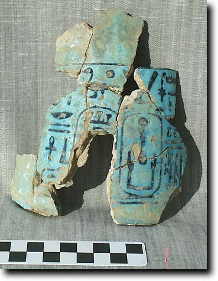
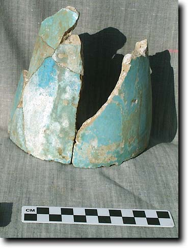
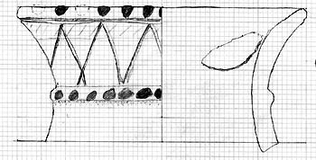
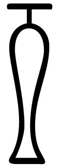
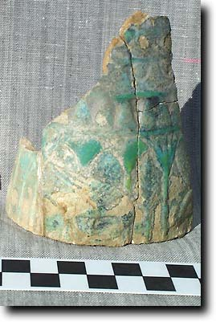
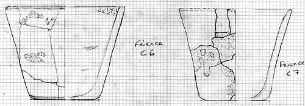

- Home
- Finds home
- Finds by date
- Finds by type
- Conservation
- Slideshow
- Site general
Faience vessels
Many fragments of faience from vessels were found in the shafts inside the tomb. We have identifed two types, larger, more elaborate vessels, and small cups.
Vessel with names of Shabaka
This vessel appears to have been found in three parts, the central body with inscription, the neck (drawing) and the possible lower body (upside down in the photograph). It is possible that the original vessel might have resembled the jar shown in the hez hieroglyph
|  |  |
|
Body fragments with names of Shabaka |
Probable body fragments |
|  |
(left): drawing of the neck fragments (right): a hez hieroglyph |
Larger decorated vessels
|
Several fragments were found of a vessel bearing decoration of plant motifs. Such decoration is not unknown in the Third Intermediate Period, often on highlly decorated chalices. One example can be found on the British Museum's web site. |
 |
Small cups
Most of the fragments found belong to small cups of a greenish faience, without inscriptions.

Such cups as these are known in context of deep blue faience from the 21st dynasty. In green, the major examples I have encountered so far come from burials of 25th dynasty date at el-Kurru and at Nuri, both in the Sudan, the ancient kingdom of Kush. These cemeteries are those associated with the kings of that dynasty, and they may be further evidence for Kushite influence in Thebes.
© Nigel Strudwick 1997-2016